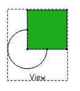

Vue d'ensemble
TechDraw a deux outils de hachures:  Hachures à partir de motifs (en mosaïque) et
Hachures à partir de motifs (en mosaïque) et  Hachures par lignes géométriques.
Hachures par lignes géométriques.
Pour l'un ou l'autre outil, sélectionnez une région fermée, 
{kind=link}
puis appuyez sur l'icône appropriée. La face sera hachurée initialement en utilisant les valeurs par défaut. Modifiez les propriétés des hachures pour obtenir le motif souhaité.
Zone de hachures
La zone de hachures utilise des pavés de base Svg ou bitmap pour couvrir la face sélectionnée.
Les pavés Svg sont typiquement des images de 64x64 pixels. Quelques exemples sont disponibles sur GitHub.
Tout fichier bitmap peut être utilisé (png, jpeg, etc.) comme remplissage. Les résultats sont meilleurs avec beaucoup de petites images répétées plutôt qu'avec moins d'images plus grandes.
Les remplissages de zone de hachurage par défaut peuvent être spécifiés dans Préférences.
Hachures géométriques
Geometric Hatch forme un motif de lignes basé sur une spécification lue dans un fichier. Ce fichier est généralement compatible avec le format AutoDesk® PAT largement utilisé. Une petite sélection de modèles est incluse dans le fichier FCPAT.pat:
; standard PAT patterns *Diamond, 45 diagonals L & R, Solid, 1.0 mm separation 45,0,0,0,1.0 -45,0,0,0,1.0 *Diamond2, 45 diagonals L & R, Solid, 2.0 mm separation 45,0,0,0,2.0 -45,0,0,0,2.0 *Diamond4, 45 diagonals L & R, Solid, 4.0 mm separation 45,0,0,0,4.0 -45,0,0,0,4.0 *Diagonal4, 45 diagonal R, Solid, 4.0 mm separation 45,0,0,0,4.0 *Square, square grid, Solid, 5.0 mm separation 90,1,1,0,5.0 0,0,0,1,5.0 *Horizontal5, horizontal lines, Solid 5.0 separation 0,0,0,0,5.0 *Vertical5, vertical lines, Solid, 5.0 separation 90,0,0,0,5.0
Vous pouvez ajouter vos propres modèles si vous avez l'autorisation d'écriture sur FCPAT.pat, ou vous pouvez créer votre propre fichier * .pat et le pointer dans Préférences.
PAT File Chemin
Le fichier de format FCPAT.pat peut être trouvé à l'emplacement suivant.
- Windows: C:\Program Files\FreeCAD\data\Mod\TechDraw\PAT\
- Mac: /Applications/FreeCAD.app/Contents/Mod/TechDraw/PAT/
- Linux: /usr/share/freecad/Mod/TechDraw/PAT/
- freecad-daily PPA: /usr/share/freecad-daily/Mod/TechDraw/PAT/
Retourner à TechDraw.